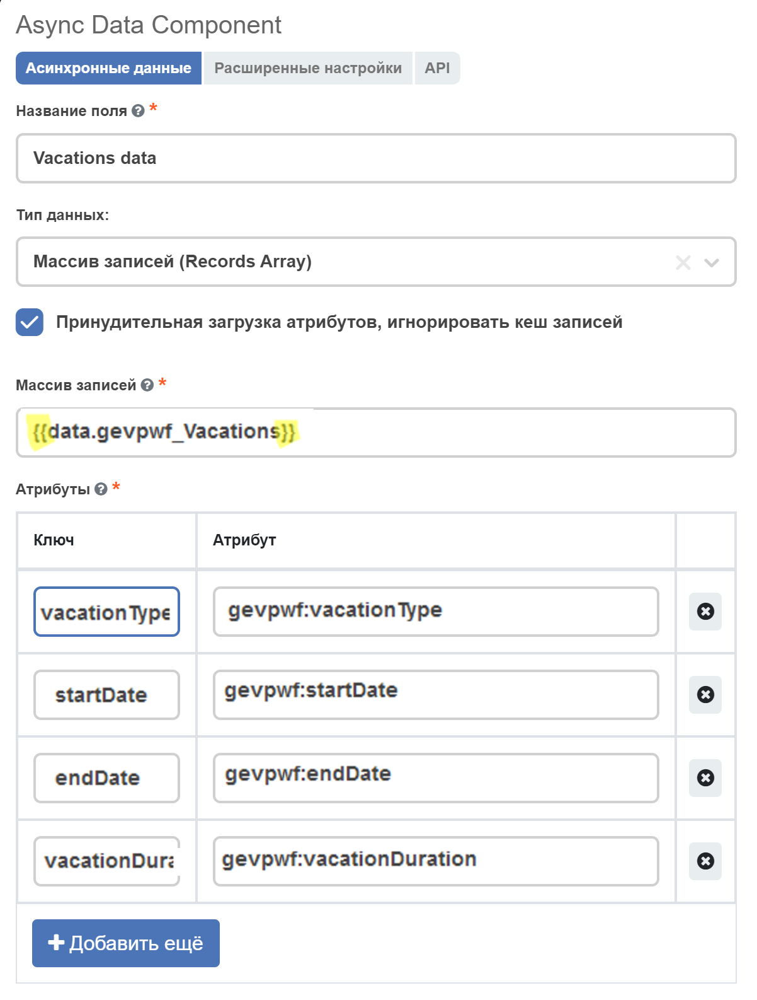
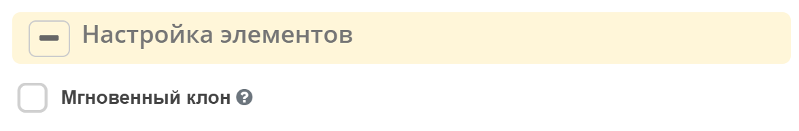
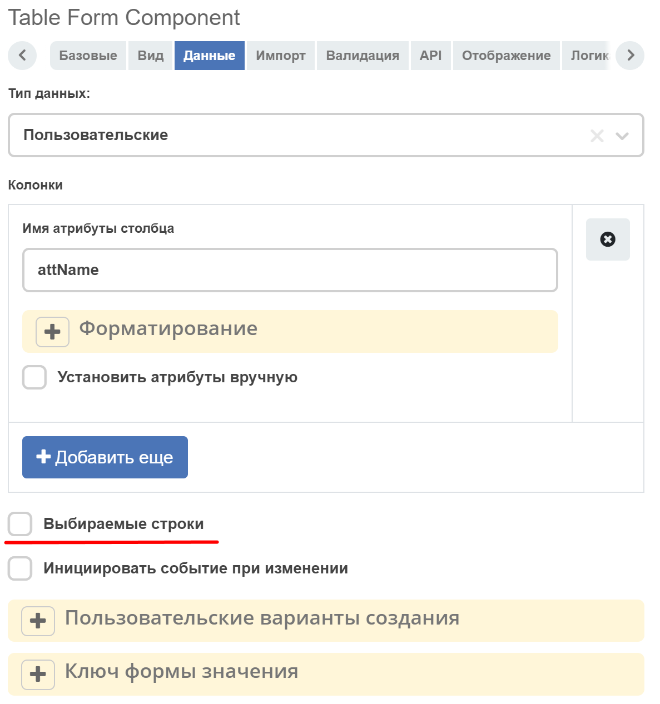
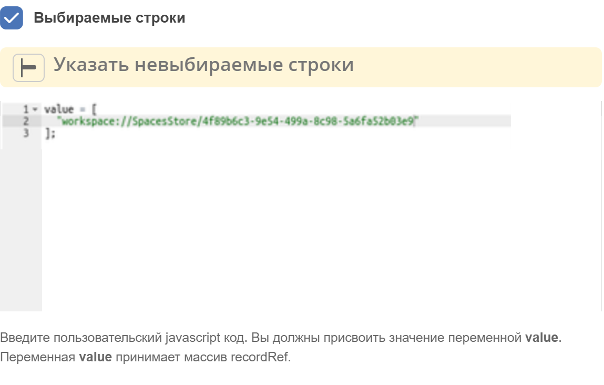
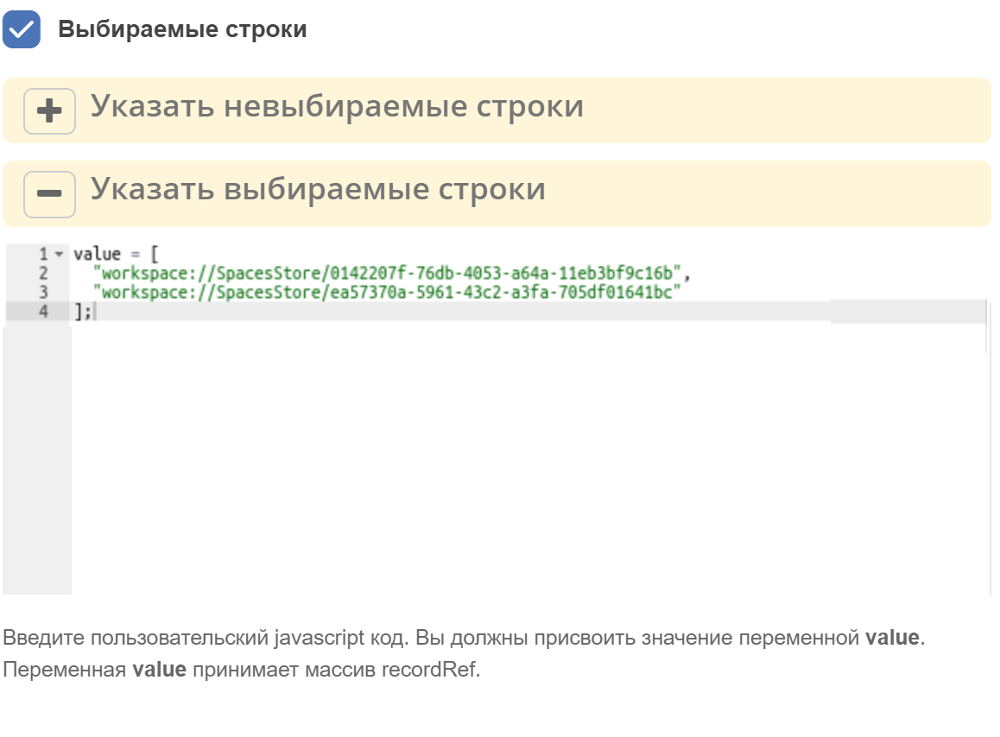
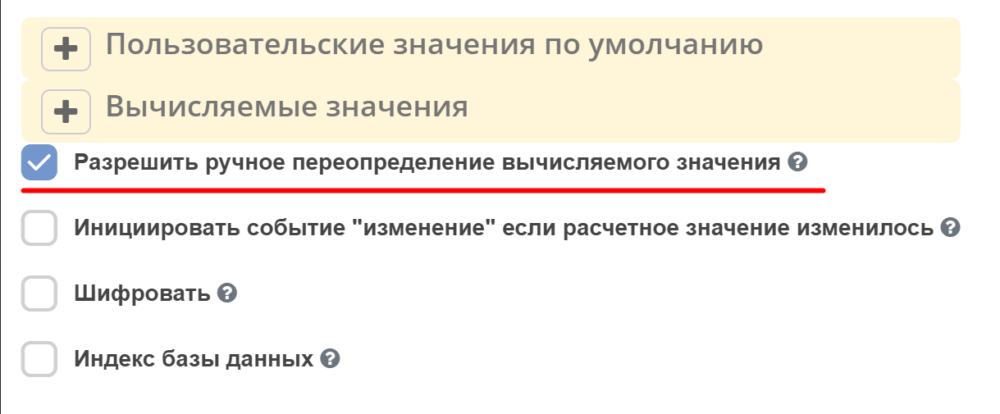
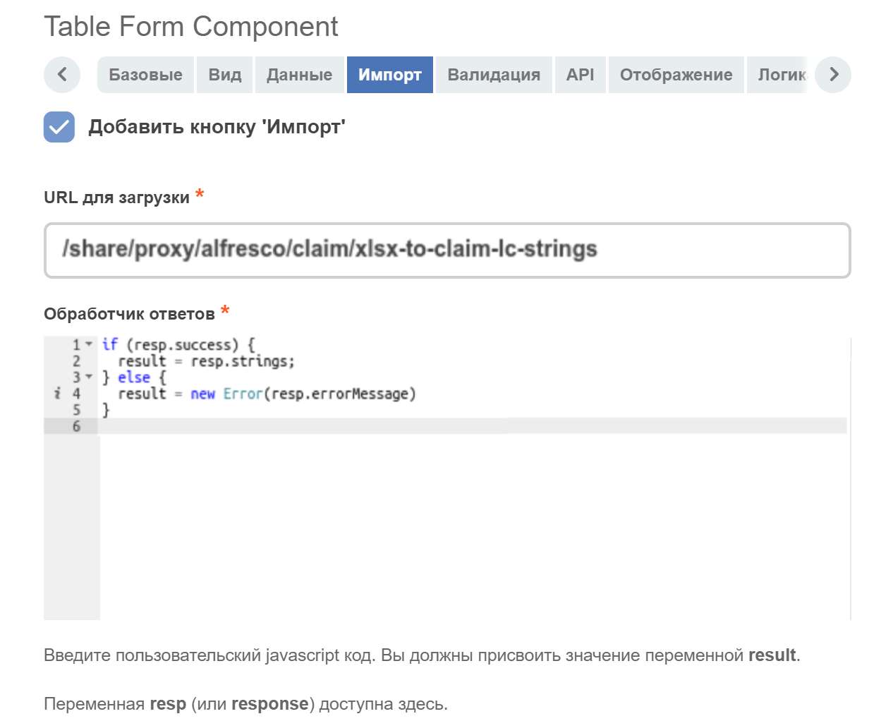
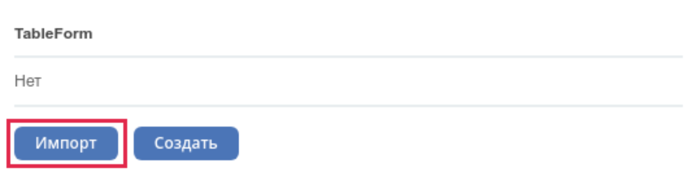

Table form
Создание компонента
Компонент Table Form позволяет отображать выбранные значения в виде таблицы.
Созданные записи являются временными и хранятся в памяти на клиенте. Отправляются на сервер вместе с родительской формой.
Для отображения кнопки Создать и возможности вызова формы создания используется formKey*, который может быть вычислен в зависимости от настройки Типа данных на вкладке Данные:
Журнал - варианты создания вычисляются с помощью настройки ID журнала, либо на основе типа ассоциации, которая указана в атрибуте (при этом ID журнала заполнять не нужно). Есть возможность выбрать колонки для отображения в таблице.
{kind=link}
{kind=link}
{kind=link}
Пользовательские - варианты создания вычисляются на основе типа ассоциации, которая указана в атрибуте. При этом требуется добавить вручную колонки для отображения в таблице (соответствуют названиям полей в форме создания).
{kind=link}
{kind=link}
{kind=link}
Варианты создания определяются из указанного аттрибута на вкладке API, либо из настройки Пользовательские варианты создания на вкладке Данные. Настройки колонок берутся из первого по списку полученного варианта создания. Если нет ни одного доступного варианта создания, кнопка Создать будет скрыта.
Для каждой колонки можно задать настройки вручную. Для этого нужно отметить галочкой пункт Установить атрибуты вручную:
{kind=link}
Таким образом можно установить заголовок колонки, тип данных и признак Выбор нескольких.
Предусмотрена возможность применения к колонке форматтера вручную. Опция Установить атрибуты вручную не влияет на настройку форматтера. Поле настройки форматтера принимает значение вида:
value = {
name: 'ExampleFormatter',
params: {}
};
Пример:
value = {
name: 'FunctionFormatter',
params: {
fn: function(cell, rec, col, data) {
cell.innerHTML = `<strong>${data}</strong>`;
}
}
};
{kind=link}
Чтение введенных данных
Для этого можно использовать компонент Async Data (добавить ссылку) с типом данных Массив записей (Records Array).
В поле Массив записей (Records Array) указывается имя таблицы, заключенное в двойные фигурные скобки, в аттрибутах - поля этой таблицы и ключи, по которым они будут доступны.
{kind=link}
Как получить доступ к родительской форме?
Чтобы получить доступ к родительской форме из формы создания/редактирования записи, можно использовать объект instance.options.parentForm.
Например, если требуется установить значение по-умолчанию полю дочерней формы, опираясь на значение из поля родительской формы, можно установить этому полю настройку Пользовательские значения по умолчанию:
if (instance.options.parentForm) {
value = instance.options.parentForm.getValue()['data']['someParentFormFieldName']
}
{kind=link}
Отображение действий
Вкладка Отображение, настройка Элементы отображения позволяет задавать условия отображения действий.
Есть два варианта установки действий:
При использовании источника данных Журнал и установки флага Использовать действия журнала, в таблице будут задействованы действия заданные в конфигурации указанного журнала.
Если источник не журнал или не нужны журнальные действия, и заполнено поле Действия компонентов, отобразятся доступные стандартные действия, описанные ниже.
Если установлен флаг Использовать действия журнала, то из поля Действия компонентов будет обработано только действие Создать.
Наименование действия |
Ключ |
По умолчанию |
disabled / режим просмотра |
|---|---|---|---|
Создать |
create |
true |
недоступно или скрыто |
Редактировать |
edit |
true |
недоступно |
Удалить |
delete |
true |
недоступно |
Просмотр |
view |
true |
|
Предпросмотр документа |
preview |
false |
|
Клонировать |
clone |
false |
Поле принимает javascript-выражение, в котором необходимо присвоить переменной value объект с необязательными свойствами create, view, preview, edit и delete (ключи в таблице выше).
Если какое-то из свойств не указано, то компонент сам будет решать, отображать элемент или скрывать, в зависимости от ситуации (*).
Если компонент Table Form в состоянии disabled или форма в режиме просмотра, элементы “редактировать“, “удалить“ в любом случае будут недоступны.
value = {
create: false,
view: false,
edit: false,
delete: true,
preview: true
}
{kind=link}
Настройки элементов
Вкладка Отображение настройка Элементы отображения задает некоторые свойства действиям.
Мгновенный клон
Если флаг установлен, запускается мгновенное добавление, в противном случае отображается форма создания и запись добавляется только после отправки.
{kind=link}
Выбор строк в таблице и выполнение действий с выбранными строками
Для включения возможности выбора строки в таблице нужно отметить галочкой пункт Выбираемые строки на вкладке Данные.
{kind=link}
Для получения списка выбранных строк в таблице у компонента предусмотрен метод getSelectedRows().
Например, чтобы выполнить какое-нибудь действие с выбранными строками в таблице при нажатии на кнопку, в компоненте Button выберем Действия: Custom и укажем Button Custom Logic:
const tableFormComponent = utils.getComponent(form.components, 'tableFormComponentKey');
if (!tableFormComponent) {
return;
}
const selectedRows = tableFormComponent.getSelectedRows();
// some actions with selectedRows
Запрет выбора некоторых строк в таблице
На вкладке Данные в поле Указать невыбираемые строки можно запретить выбор определенных строк в таблице:
{kind=link}
Установка выбранных строк по-умолчанию
На вкладке Данные в поле Указать выбираемые строки можно указать, какие строки должны быть выбраны по-умолчанию:
{kind=link}
Флаг «Разрешить ручное переопределение вычисляемого значения»/ «Allow Manual Override of Calculated Value»
{kind=link}
На вкладке Данные выставленный флаг разрешает принудительно перезаписать пользователю поле, где уже введено вычисляемое значение.
Статические заголовки
Для включения статического заголовка необходимо в родительской форме проставить чекбокс Скрыть имя записи в модальном заголовке/ Hide record name in modal title. В данном случае произойдет скрытие имени ноды.
Так же, есть возможность задать свой локализованный статический заголовок. Для этого необходимо:
Создать в Локализация/Localization бандл с необходимой локализацией
Вставить ключ локализации в поле Укажите пользовательское статическое название поля для объединения с основным/ Enter custom static label for concat with basic. Если данный ключ не будет найден, то в заголовок добавится тот текст, что лежит в поле Укажите пользовательское статическое название поля для объединения с основным/ Enter custom static label for concat with basic
Импорт из файла
Появилась возможность импортировать в таблицу данные из файла (например, xslx). Для этого в настройки компонента добавлен раздел Импорт:
{kind=link}
Поле URL для загрузки предназначено для указания url, куда будет отправляться POST-запрос с прикреплённым файлом (или несколькими файлами) для обработки. Обязательно к заполнению.
Поле Обработчик ответов предназначено для обработки результата ответа сервера после загрузки файла. Обязательно к заполнению. Принимает javascript-выражение, в котором необходимо присвоить переменной result строку (recordRef), массив строк (массив recordRef) или ошибку (result = new Error(„текст ошибки“)). В javascript-выражении помимо стандартных объектов formio (data, instance, _, moment, и т.д.) доступна переменная response (или resp), которая содержит результат ответа сервера после загрузки файла.
После заполнения настроек у компонента должна появиться кнопка Импорт:
{kind=link}